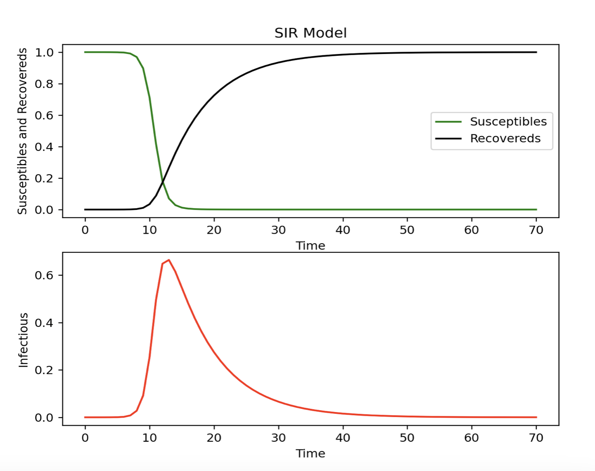

Appendix C — Tips on Converting to Python
Translating R code into Python can be a smooth transition with the right approach. Let’s start with the basics, from installing packages to loading libraries, and compare the equivalents between R and Python, including the popular tidyverse in R and its counterparts in Python.
C.1 Packages and Libraries
Installing Packages:
R:
install.packages("package_name")Python (using pip):
!pip install package_namePython (using conda):
!conda install package_name
Loading Libraries:
R:
library(package_name)Python:
import package_name
C.2 Comparing tidyverse with its Python Equivalents
tidyverse (R): tidyverse is a collection of R packages designed for data science, including dplyr for data manipulation, ggplot2 for data visualization, tidyr for data tidying, etc.
library(tidyverse)Python Equivalents:
pandas: Similar to dplyr, pandas provides powerful data manipulation tools.
import pandas as pdmatplotlib/seaborn: Comparable to ggplot2, these libraries are used for data visualization.
import matplotlib.pyplot as plt import seaborn as snsnumpy: While not a direct equivalent to tidyr, numpy offers functionalities for array manipulation and numerical computing, which can be handy for data tidying tasks.
import numpy as npscikit-learn: Provides tools for data preprocessing, modelling, and evaluation, resembling some functionalities of tidyverse packages like modelr.
from sklearn import ...tidyverse-like package: There isn’t a single package in Python that encompasses the entire functionality of tidyverse, but you can combine pandas, matplotlib/seaborn, numpy, and scikit-learn to achieve similar results.
By understanding these equivalences and leveraging the rich ecosystem of Python libraries, you can effectively translate your R code into Python, ensuring a smooth transition while retaining the analytical power and flexibility you need for your projects.
C.3 Creating Data Making Statistics
Creating Basic Data:
R:
# Create a data frame data <- data.frame( x = c(1, 2, 3, 4, 5), y = c(2, 3, 4, 5, 6) )Python (using pandas):
import pandas as pd # Create a DataFrame data = pd.DataFrame({ 'x': [1, 2, 3, 4, 5], 'y': [2, 3, 4, 5, 6] })
Basic Statistics:
R:
# Summary statistics summary(data)Python (using pandas):
# Summary statistics print(data.describe())
C.4 Building a Linear Regression Model
R:
# Load the lm function from the stats package library(stats) # Fit a linear regression model lm_model <- lm(y ~ x, data = data) # Summary of the model summary(lm_model)Python (using statsmodels):
import statsmodels.api as sm # Add a constant term for intercept X = sm.add_constant(data['x']) # Fit a linear regression model lm_model = sm.OLS(data['y'], X).fit() # Summary of the model print(lm_model.summary())Python (using scikit-learn):
from sklearn.linear_model import LinearRegression # Initialize the model lm_model = LinearRegression() # Fit the model lm_model.fit(data[['x']], data['y']) # Coefficients print("Intercept:", lm_model.intercept_) print("Coefficient:", lm_model.coef_)
While the syntax and libraries may differ slightly, the overall process remains conceptually similar. By understanding these comparisons, you can effectively transition between R and Python for data analysis and modelling tasks.
C.5 Example of a Model Workflow
Data Preprocessing:
import pandas as pd from sklearn.preprocessing import StandardScaler data = pd.read_csv('data.csv') data.fillna(method='ffill', inplace=True) scaler = StandardScaler() scaled_data = scaler.fit_transform( data[['feature1', 'feature2', 'feature3']] )Model Selection and Training:
from sklearn.model_selection import train_test_split from sklearn.linear_model import LinearRegression from sklearn.metrics import mean_squared_error X = data[['feature1', 'feature2', 'feature3']] y = data['DALYs'] X_train, X_test, y_train, y_test = train_test_split(X, y, test_size=0.2, random_state=42) model = LinearRegression() model.fit(X_train, y_train) y_pred = model.predict(X_test) mse = mean_squared_error(y_test, y_pred) print(f'Mean Squared Error: {mse}')Time Series Forecasting Example:
from fbprophet import Prophet ts_data = data[['date', 'DALYs']] ts_data.rename(columns={'date': 'ds', 'DALYs': 'y'}, inplace=True) model = Prophet() model.fit(ts_data) future = model.make_future_dataframe(periods=365) forecast = model.predict(future) model.plot(forecast)The SIR Model Example:
Set-up the environment for running python in RStudio by loading the
{reticulate}package and the following commands:library(reticulate)This is to configurate python and for installing necessary packages:
py_config() # type <pip3 install scipy> on terminal # type <pip3 install matplotlib> on terminalimport matplotlib matplotlib.use('TkAgg') # Ensure you have an interactive backend import matplotlib.pyplot as plt import scipy.integrate as spi import numpy as npSet-up the parameters:
beta = 1.4247 gamma = 0.14286 TS = 1.0 ND = 70.0 S0 = 1 - 1e-6 I0 = 1e-6 INPUT = (S0, I0, 0.0)Define differential equations:
def diff_eqs(INP, t): Y = np.zeros((3)) V = INP Y[0] = - beta * V[0] * V[1] Y[1] = beta * V[0] * V[1] - gamma * V[1] Y[2] = gamma * V[1] return Y t_start = 0.0; t_end = ND; t_inc = TS t_range = np.arange(t_start, t_end + t_inc, t_inc) RES = spi.odeint(diff_eqs, INPUT, t_range)#Plotting # Ensure interactive mode is on and plot plt.ion() plt.subplot(211) plt.plot(RES[:, 0], '-g', label='Susceptibles') plt.plot(RES[:, 2], '-k', label='Recovereds') plt.legend(loc=0) plt.title('SIR Model') plt.xlabel('Time') plt.ylabel('Susceptibles and Recovereds') plt.subplot(212) plt.plot(RES[:, 1], '-r', label='Infectious') plt.xlabel('Time') plt.ylabel('Infectious') plt.show()

The code for this example is adapted from: Modeling Infectious Diseases in Humans and Animals Matt J. Keeling & Pejman Rohani.
By following these steps, you can analyze DALYs and infectious diseases, drawing trends, understanding relationships, and predicting future outcomes effectively.